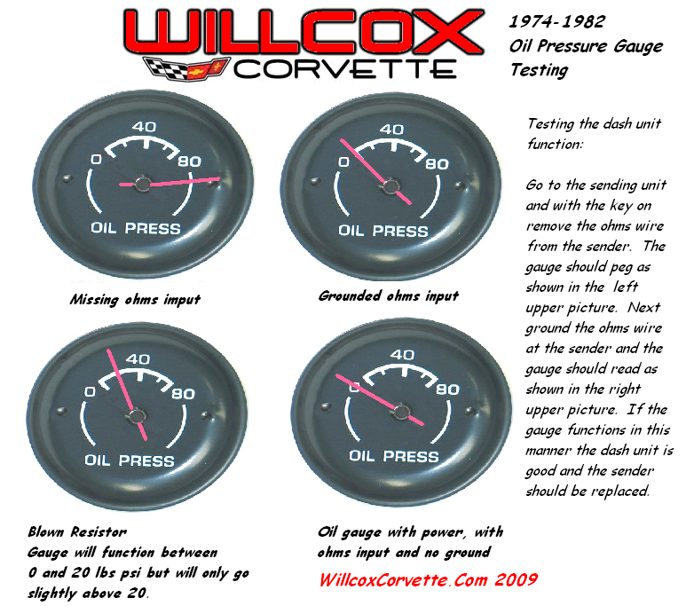

The picture below illustrates how to test the function of a 1974-1982 Corvette Oil pressure gauge. This test will either confirm or eliminate the dash unit as the issue. If you follow this test and the gauge reads as shown in the top two pictures then you should replace the sending unit. If you get a sending unit from a local parts store make sure you don’t get one for a car with lights… (this is a common issue, they sell you the wrong sender).
Oil Pressure Gauge Testing 1974-1982
